Trabajo
1 detenida por el límiteLlegas al límite. La conversación sigue.
Porter lleva tus sesiones de Claude Code de una cuenta que ha llegado a su límite de uso a otra con margen, para que sigas justo donde Claude se detuvo.
Datos de ejemplo
- Claude detiene la sesión al llegar al límite.
- Porter la lleva a una cuenta con margen.
- La misma conversación, en otra cuenta.
La conversación nunca fue de una cuenta.
Claude Code guarda cada conversación en su propia carpeta de tu Mac, compartida por todas las cuentas. Lo único que pertenece a una cuenta es la breve lista de sesiones de Claude Desktop. Porter mueve la entrada de esa lista, quita el error de límite y se lleva los worktrees de git que usa la sesión.
- Antes de cada cambio, Porter hace una copia de seguridad, y lo que elimina va a la Papelera.
- Si Claude Desktop está abierto, tiene su lista en memoria, así que Porter lo cierra antes y lo vuelve a abrir después.
Varios Claude Desktop, uno al lado del otro.
Normalmente, Claude Desktop funciona con una sola cuenta a la vez. Con Porter, cada perfil es un Claude Desktop independiente, con su propio inicio de sesión, sus ajustes y sus sesiones, en el Dock y en ⌘-Tab como cualquier app. Cuando una cuenta se agota, sigue trabajando en la ventana siguiente.
Si quieres, los enlaces de Claude que abras desde el navegador se abren en el perfil que usaste por última vez.
Datos de ejemplo
Trabajo
you@work.example
Personal
you@home.example
Datos de ejemplo
Todas las cuentas de un vistazo.
Haz clic en el icono de Porter en la barra de menús: cada cuenta muestra su uso de 5 horas y de 7 días, las sesiones detenidas por un límite y un botón para moverlas adonde haya margen.
Uso en tiempo real, cuando lo quieras.
Activa Uso en tiempo real y Porter consulta a claude.ai cada pocos minutos, con la sesión de cada perfil, como hace la pantalla de uso de Claude. También ves cuándo se restablece cada límite y los límites que solo se aplican a un modelo, como Fable.
Todas tus sesiones, en una sola ventana.
- Sesiones agrupadas por proyecto, con búsqueda y filtros
- Muévelas o cópialas a otra cuenta, o arrástralas hasta ella
- Archiva, restaura y elimina, con una copia de seguridad antes de cada cambio
- Mueve la carpeta de un proyecto y todas las sesiones que la usan la siguen

Y desde la línea de comandos.
La misma app mueve sesiones desde tus scripts.
$ alias porter="/Applications/Porter for Claude Desktop.app/Contents/MacOS/Porter"$ porter --list # cuentas, perfiles y sus listas de sesiones$ porter --move --from WORK --to PERSONAL --dry-run # qué pasaría, sin cambiar nada$ porter --move --from WORK --to PERSONAL --restart # mover, cerrando y volviendo a abrir Claude DesktopSe instala en un minuto.
-
Descarga
Descarga Porter.dmg, ábrelo y arrastra Porter a Aplicaciones.
Porter.dmg -
Permítelo una vez
Porter no está notarizado, así que macOS bloquea la primera apertura. Abre Ajustes del Sistema → Privacidad y seguridad y haz clic en «Abrir igualmente», o ejecuta:
xattr -dr com.apple.quarantine "/Applications/Porter for Claude Desktop.app" -
Inicia sesión y listo
Haz clic en el icono de Porter en la barra de menús, crea un perfil para cada cuenta e inicia sesión. A partir de ahí, Porter se actualiza solo.